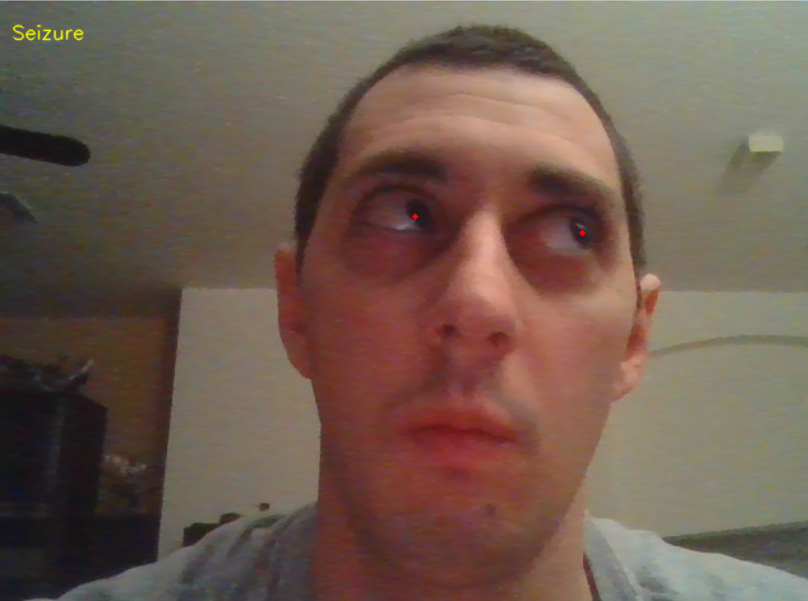
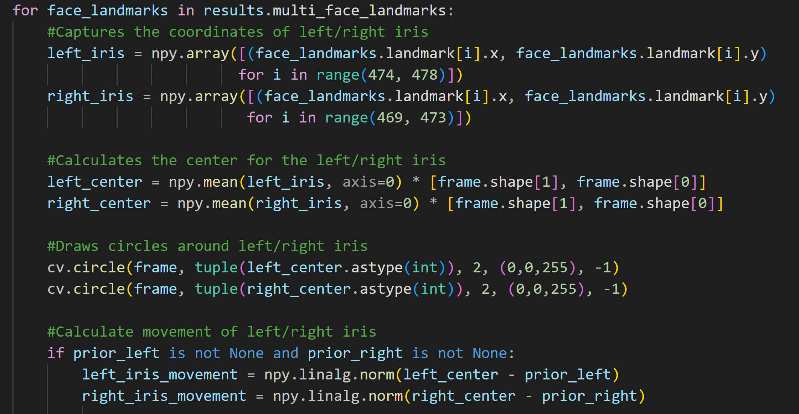
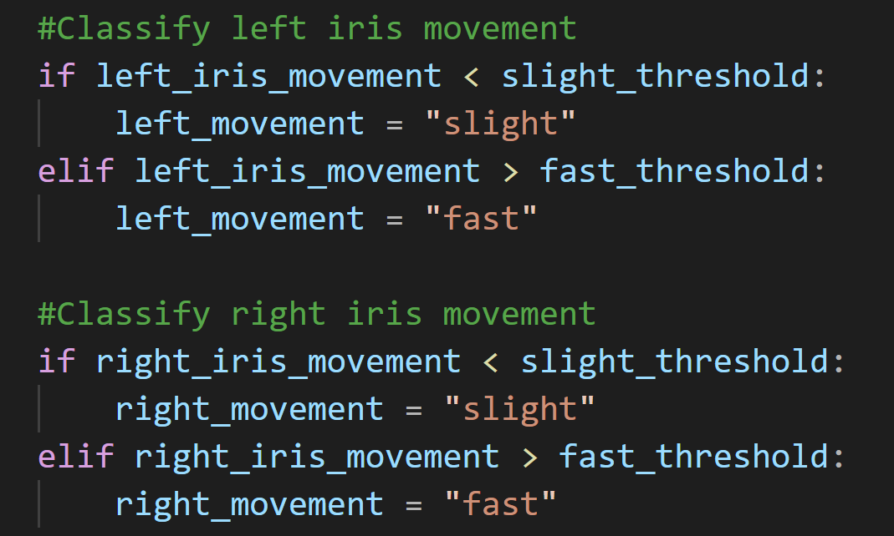

Seizure Detection
A project that focuses on detection of epileptic seizures using computer vision to differentiate between potiental seizure and actual seizure. The program uses video from a webcam and with the use of MediaPipe landmarking it detects the irises of the eyes. The program then tracks the movement of the irises and if that motion is below or above a certain threshold then it will determine if the person is having a seizure or if the person is having a potential seizure.

Demo
The video demonstrates the seizure detection system in action. It shows how the system processes video input and determines whether a seizure is occurring based on the movement of the irises.
Gallery

